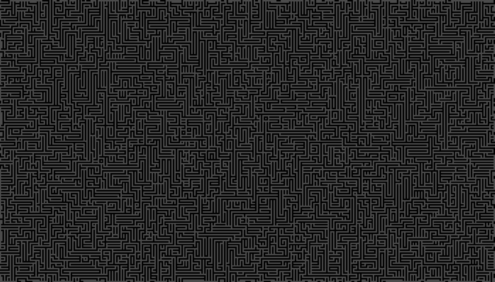
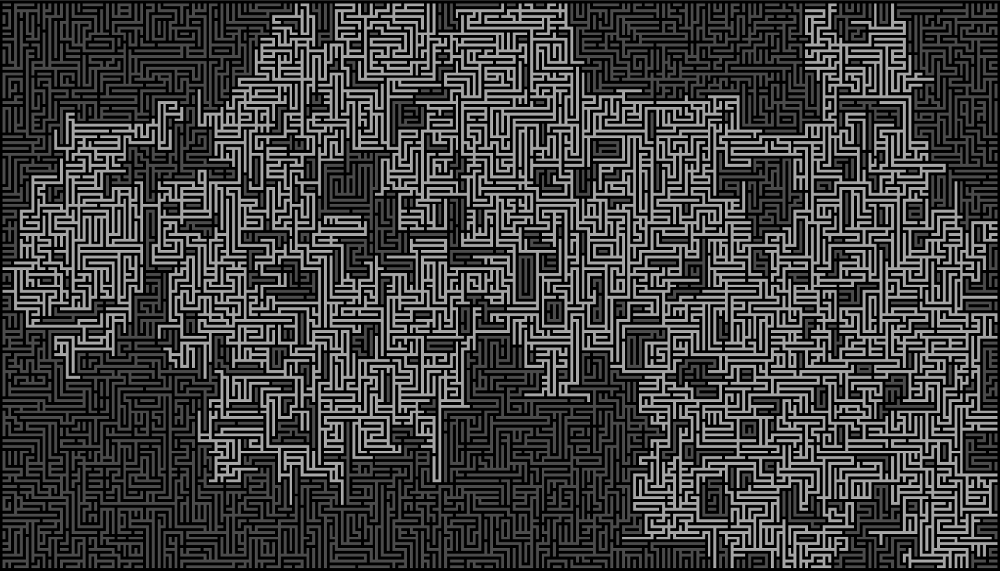
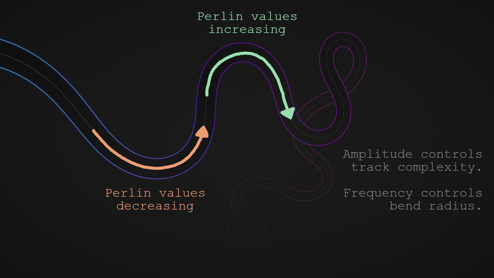

Side Projects
Third-Person Paint Platformer
Project Inspiration
The original inspiration for this little project came from a combination of playing Splatoon & The Unfinished Swan, as well as watching a fantastic GDC talk given by John Nesky, of thatgamecompany. The presentation covers the notoriously well-executed third-person camera of Journey, and as a gameplay programmer who had never made such a thing before, it was an appealling challenge.
I wanted to try out the surface painting mechanics as a means of discovering how they are done in other games too, as someone with no formal education in shaders at that point it seemed like magic. As much as the textureless art style of The Unfinished Swan works wonders for that game, I was really curious if I could extend on the system to work with textures as well.
Initial Goals
My first 3rd-person camera
I started out with the camera, as I do on most of my projects these days. What special features would it need?
Setting the expectations of what I was building well ahead of time was a great tool to help with this process, and something I'm sure most game designers use with their own projects. With the knowledge of every state the camera would need to be in at any given time, I was able to map out the transitions between them and logistically solve the design questions ahead of time.
I figured the camera would only need to be in one of two states for my little demo, either aiming or relaxed. For the aiming state I would draw the camera in close over the player's shoulder and for the relaxed state it would return to a neutral position behind the player. However, both of these states would require the camera to avoid obstacles.
While addressing this complication, I learnt about SphereCast() and used it to trace the shape of a capsule from my player outwards to the target position of the camera. Any hit along the way would be marked and cause the camera to smoothly draw in closer to the player. As a failsafe, I also perform a Raycast() in much the same way, so that if line of sight to the player is ever occluded entirely (as a result of fast movement that would cause the camera to clip into geometry), I snap the camera forward the minimum distance to ensure this clipping never even happens, as shown. The outcome is the minimal amount of snapping and maximal amount of player agency over the camera, which is most suitable to this style of gameplay.

A diagram showing the collision tests performed by the camera to keep it outside of the map geometry.
Something to paint with
For the painting mechanic, I first needed a convincing projectile to cause the impact. I was really inspired by the look of the coloured paints in Portal 2 and wanted to give that sort of appearance a try for myself, but I wasn't prepared to sit down and try to write an implicit surface renderer to simulate that look so I found my own way with a relatively simple mesh displacement shader, that I ended up being really happy with. The shader gives a nice effect when moving, by displacing the vertices along each axis proportionally to its movement on that axis, causing it to appear to interact with the air as it arcs towards its target.

The shader graph material I made for the paintballs.
The movement effects of the paintball material.
Painting on the canvas of reality
The surface painting mechanic itself ended up being much more of a learning curve than I had expected. I first cloned the project repository from the Splatoon video by Mix and Jam and then began reading through and adapting it to suit my needs and figure out how it worked. In doing so I learnt about Graphics.Blit(), UV channels, material instancing, masking textures and more. So while I can't claim the original implementation to be my own, I did end up modifying almost everything else about it including the primary surface shader used by the paintable surfaces.
So let's dive into that. At its core, the painting system works by creating an instance of every material on every separate object each with it's own grayscale mask texture that gets written to with Blit() during gameplay. This represents where the paint is on the object, thanks to the power of UVs. So when a paintball contacts a surface it calls a function passing in it's current position to lookup this texture coordinate and write to its mask, therefore painting the surface.

Here's the shader graph for the Paintable material. It's pretty big.
References Used
That's all for this one. It was fun to try out so many new areas of programming at once and I learnt a lot from it.
Cheers!
Cellular Automata Labyrinth
Project Inspiration
Early on during my study of game programming I was introduced to Conway's Game of Life, and cellular automata as funamental algorithms in computer science. The idea that such complex patterns could emerge and be manipulated from such simple rules operating across an entire grid was really interesting and while I didn't know it yet, this would ignite my passion for procedural generation for years to come.
The fragments left behind by the algorithm, and the way it swept across the grid manipulating existing data into a new form had me inspired to create something with a more constructive intent. Maybe I could generate a dungeon like this, or an entire world like Terraria?
Initial Goals
Transforming the Game of Life
I first built a really quick prototype of the Game of Life in a C# console application. It wasn't particularly fast but it worked well enough as a demo and the rules were easy to modify which is all that mattered at the time. The classic version of the algorithm follows these three basic rules:
- Any live cell with two or three live neighbours survives.
This represents a healthy population. - Any dead cell with exactly three live neighbours becomes alive.
This represents reproduction. - Any other live cells that don't satisfy rule 1 die in the next generation.
This represents an oversized or insufficient population.
Changing the numbers used in these rules yielded some interesting results and I added some new rules of my own into the mix as well until arriving at the final version which was used for the basis of the maze generation algorithm:
- Any cell with both X and Y coordinates as odd values dies in the next generation.
This ensures the maze structure forms cleanly. - Any dead cell that does not satisfy rule 1 will become alive if its total neighbour count is 2 or less.
This creates connective walls and reduces noisiness in the wall structures. - Any live cell with more neighbouring corners than edges will have a random chance of dying in the next generation.
Dying solves this constraint instantly, but randomly living allows more interesting structures to form over time. Higher chances of living take longer to resolve but form more interesting pathways. - Repeat these steps on all cells until the previous generation is identical to the current generation.
This means the algorithm has now stabilised.
And that's it! Those new rules get us from random noise to structured intersections and winding passageways like this!
The result after applying the 4 generation rules to the boolean noise grid.
Improving the labyrinth
You might notice many of the walls (represented by the darker colour) either appear disconnected and often don't form complicated shapes that provide an interesting solving experience, or they seal in some areas entirely. I didn't want either of these things to happen, so I did some more algorithmic processing afterwards to polish the result into a more effective labyrinth.
The next step was to distribute some additional walls throughout the maze (at coordinates with even values for X and Y, ensuring no diagonal connections) to create more interesting junctions throughout the maze. I also dealt with some edge cases like a single wall with no neighbours (resolved by adding another wall to a random one of it's edges). Unfortunately this also doubled down on the second issue (inaccessible areas), and now I had to do some path verification.
I wanted the maze to be solved starting at one side of the screen and ending at the other, so I ran a looping iteration of Dijkstra's Algorithm such that it would fill all available space from the starting point, and once it could no longer progress, it would take the closest point to the objective and break the wall to the right of it, opening up the path once again. This worked perfectly and ensured there were some choke points in the maze, while also guaranteeing its solvability. Finally this pathfinding operation was run once in reverse from the end points of the previous iteration, ensuring all areas could access each other from everywhere. This allowed me to create a distinction between solvable and unsolvable regions, like so:
The separation of valid and invalid areas of the map after applying Dijkstra's Algorithm.
Overscoping, then back to essentials
Following this I experimented with some ideas like creating rooms within the maze from the inaccessible regions, creating a blobby shoreline with accompanying ocean, and even making a shop room with different items that a player could buy. Though the final product used none of this, I'll include a short step by step through the prototype map generation just to show it all in action.
This prototype map generation ended up mostly discarded, but I got to try some more cellular automata techniques!
References Used
That's all for today. Since working on this first little foray into the field of procedural generation, it has since become one of
my favourite topics in all of programming and I'm excited to take my skills even further in the future.
Cheers!
Procedural Road Generator
Project Inspiration
This little driving game came about as a fusion between the level generation of Impossible Road and the character controller of Mario Kart. Responsive controls are notoriously inherent to Nintendo games and the Mario Kart games are no exception. As something I grew up playing, the kart controls feel second nature to me, often triggering a "flow-like" state of focus. I wanted to try combining this feeling with some kind of endless procedural track, to keep things feeling unpredictable but fair, and allow the player to zone out and cruise as long as they wanted.
Initial Goals
Creating an infinite road
To create a smooth, endless track I could have followed the conventional wisdom and used Splines, but I wanted to try something a bit different this time. Perlin Noise had the sort of "landscape" I was looking for in my track, a good mix of predictable and unpredictable with a nice distribution of values that could be easily manipulated to suit my needs. Forming the basis of the track, is a backbone generated by moving from point to point based on sampling Perlin Noise in a straight line, and mapping it to an angle representing the next direction to step. The frequency and amplitude of the noise can be configured to adjust the complexity of the track in various ways too, where the frequency adjusts how often the track turns and the amplitude affects the strength of each turn. Each step creates a vertex along this path, and from there I take the cross product between the forward (ie. track tangent) vector of each point and the world-up vector to produce the extruded edges of the road.
The effects of Perlin Noise on track generation, note the values increasing / decreasing as the track veers right / left.
I also added a setting to generate a camber in the road based on the direction and intensity of its current bend (calculated based on the comparison between the previous and current vertex forward directions). Then, with this floating point value representing the turn of the road, I simply rotate the edge points around the backbone proportionally to this value. As with the real-world, this camber allows vehicles to steer through the corner more easily by tilting the road such that the change in velocity required to move around the bend aligns more with the contact points on the road, thus reducing slippage and increasing traction.
Here's how the camber controls work in-editor, 0.0 means the camber is turned off and 0.3 is a practical maximum.
Finally, I did a visual pass on the road to increase its readability at high speeds, and make it feel a little more like an actual road. First I set up a Line Renderer with a dotted line texture to follow the backbone path laid out by the mesh. Then after playtesting a bit and falling off the road quite a few times, I added some illuminated edge lines to the road with 2 more Line Renderers, this time with a scrolling glow colour determined by sampling a gradient with a time-based offset. Finally I created a basic Particle System of dust-like specks that would float around the environment and give the void a few more reference points to help the player accurately judge their velocity on the road.
Building an arcade-like vehicle controller
While researching different vehicle controllers I came across this interesting concept in a post from KenneyNL showcasing their own arcade-like vehicle controller. In the video, they show how the car is a actually just a simple Rigidbody sphere being rolled around with various forces. This seemed like a perfect analogue for the physics of the kart, as I definitely didn't want to go overboard with suspension simulations and per wheel friction forces or anything like that.
A look behind the scenes at the basic car collision setup and the real-time generation of the track.
Once I'd got the ball rolling (see what I did there?), I worked on creating a drift/boost mechanic. While Mario's drift increments his boosts in 2-3 discrete steps, I wanted to try having a continuous bar that filled while drifting and could deplete over time when boosting. Like Mario however, mine charges faster when you steer harder into a corner, meaning that moment of tension is rewarded with a big burst of speed afterwards. The physics of drifting was deceptively simple to work out, when you initiate a drift, the direction you are currently steering is recorded and your range of steering is remapped to face that direction. To give a little perspective to this, the regular range of steering is (-1.0, 1.0) whereas the drifting range of steering is (0.2, 2.0), thus allowing you to turn twice as hard in a drift, but also enforcing a minimum steer for each drift as well. The driving forces at play actually remain the same while drifting too, but the vehicle model is interpolated to be slightly slanted during this action so you appear to move side-on towards the direction of motion.
As for the physics I ended up settling on, they were relatively straight-forward. Acceleration / deceleration is handled by calling Rigidbody.AddForce() on the sphere in the current direction of steering, and the steering itself is a Lerp() mapped to a curve that increases strength over time to make the steering feel smoother without sacrificing on its responsiveness, SmoothDamp() would probably work here too.
As for the actual car itself, I picked up a basic low-poly vehicle model from KenneyNL, and added a downward Raycast() to settle it smoothly on the road mesh's normal vector. Then set up a Trail Renderer on each wheel to indicate when the player is drifting, and a little Lerp() rotation on the front wheels when steering.
References Used
That's all for this one. I'm really happy with the end result, and I'd love to make it into a more polished and complete game one day. There's tons of room to expand
on the track generation systems and the vehicle too.
Cheers!
Thank you for reading!
Feel free to check out any of my other side projects above, or simply return to the home page.